Типы грузовых автомобилей и транспортных средств
Седельный тягач
Работает с полуприцепами при помощи специального сцепного механизма — седла.
Европейские модели в основном бескапотные (кабина из стали, дисковые тормоза, подкатные мосты),
американские — капотные (кабина из пластика, барабанные тормоза).
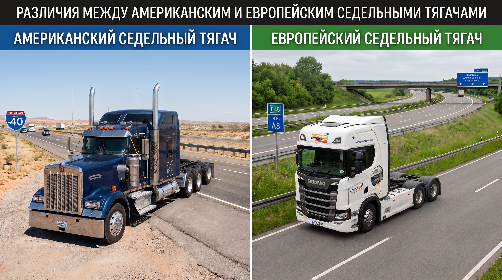
Тентованные полуприцепы
Подразделяются на бортовые, шторные и шторно-бортовые. В зависимости от типа груза возможна верхняя,
задняя или боковая погрузка (при боковой погрузке требуются сдвижные или съемные стойки).
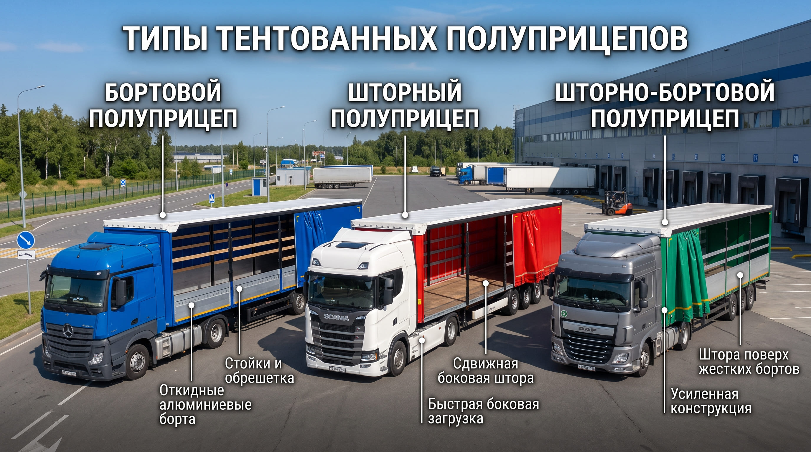
К сведению: Стандартная «Еврофура» вмещает 33 европаллета, имеет объем 82-92 м³ и
грузоподъемность до 27 тонн.
Полуприцепы увеличенного объема
- «Jumbo» (до 96 м³, ломаная рама-ступенька, не подходит для длинномерных
грузов).
- «MEGA» (до 105 м³, ровный пол, высота до 3,1 м).
- «Тонар» (увеличенный объем за счет длины 16,5 м).
Фургоны и температурные полуприцепы
- Промтоварные: цельнометаллические, для грузов без особых температурных
требований.
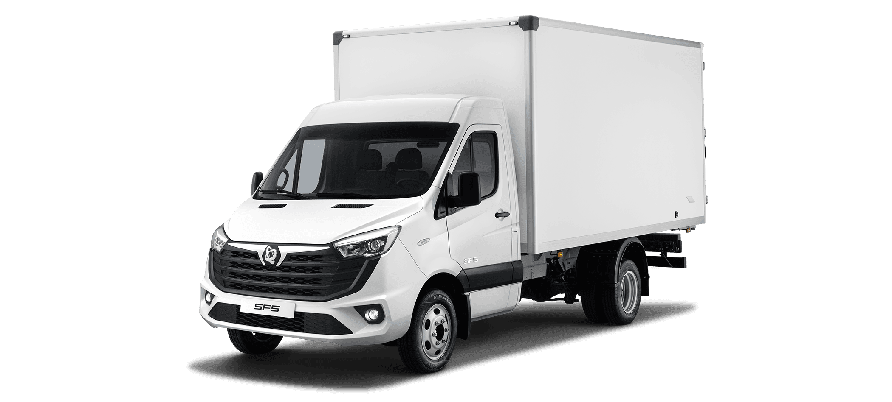
- Изотермические: работают по принципу термоса, сохраняя исходную температуру
погрузки. Эксплуатируются при внешней температуре от -40 до +40 °C.
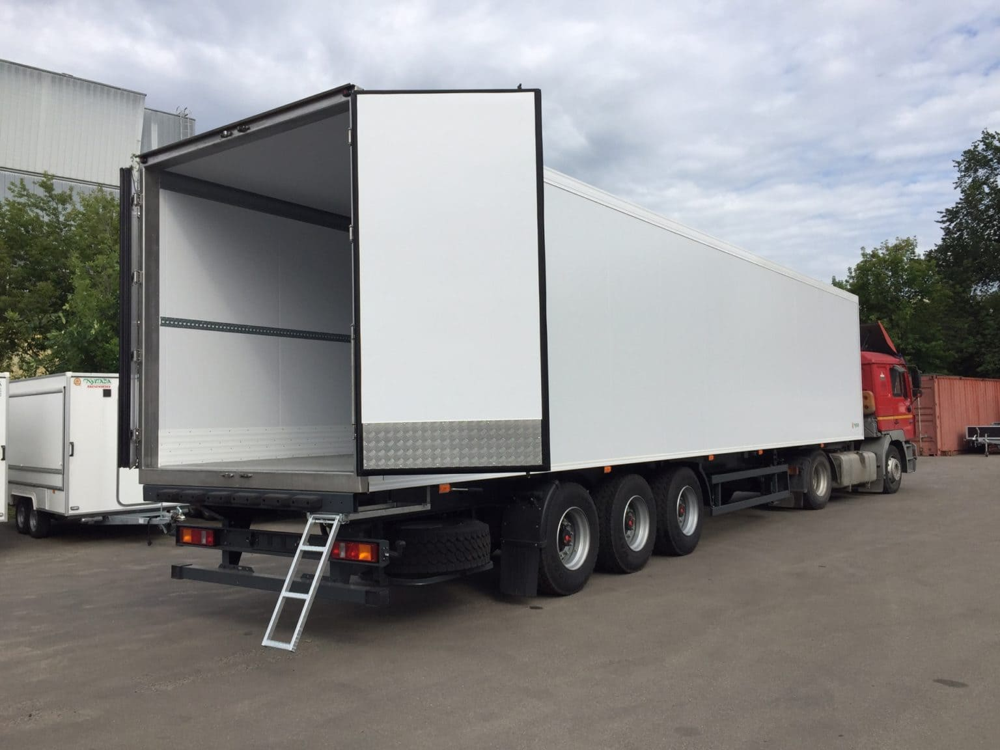
- Рефрижераторы: оснащены холодильно-отопительной установкой для поддержания
температуры от -20 до +12 °C (контролируется термописцами
и логгерами).
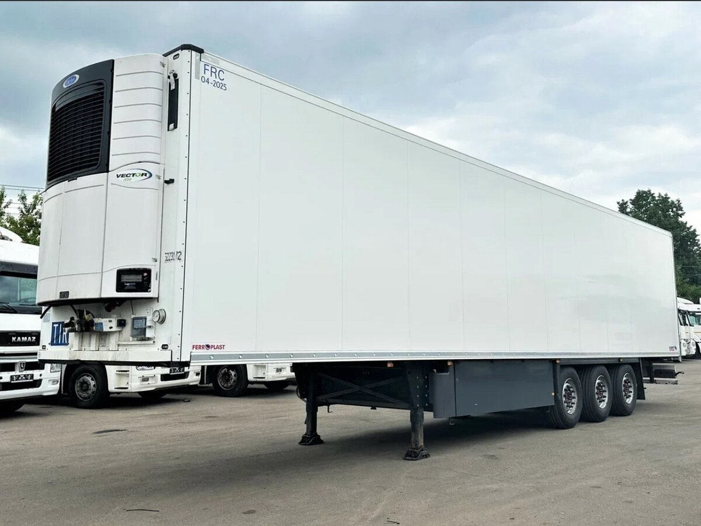
Открытые полуприцепы (бортовые, платформы)
Используются для труб, металла, железобетонных конструкций (длина 9-16 м, г/п 20-40 тонн). Платформы
без бортов удобны для грузов на всю ширину пола (например, блок-контейнеры).
Особенности крепления труб и металлопроката
- Для крепления используются:
«Коники»,
«Ригели»,
а также стяжные ремни с храповым замком.
- Арматура строительная упаковывается в связки.
- Катанка (горячекатаная проволока) упаковывается в бухты.
- Профнастил, металлочерепица и балки упаковываются в пачки. Листовая сталь может перевозиться в
рулонах.
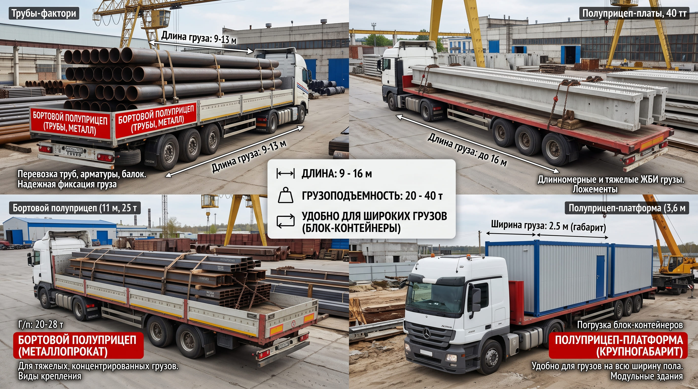
Автопоезда-сцепки
Состоят из автомобиля и прицепа. Сцепки увеличенного объема (110-120 м³) позволяют перевозить
легковесные и объемные грузы (например: утеплитель, чипсы, бытовая техника).
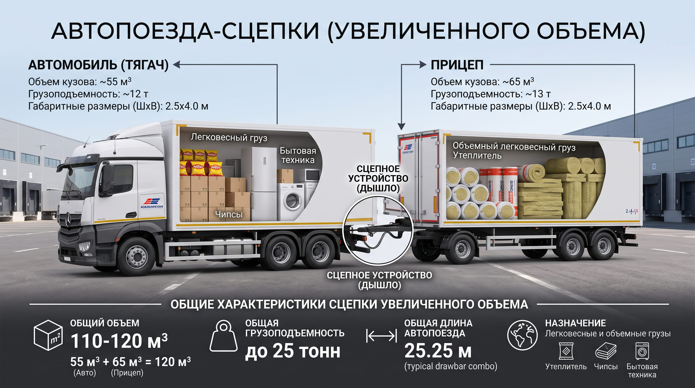
Спецтехника
- Самосвалы (задняя и боковая разгрузка).
- Зерновозы (сельхозгрузы, возможна верхняя погрузка рулонов стали или
биг-бегов).
- Контейнеровозы (для 20 и 40 футовых контейнеров).
- Низкорамные полуприцепы / «тралы» (для негабаритных и тяжеловесных грузов от 15
до 200 тонн).
Грузоподъемные механизмы
- Тележки: Гидравлические ручные тележки ? —
используются на складах и в магазинах.
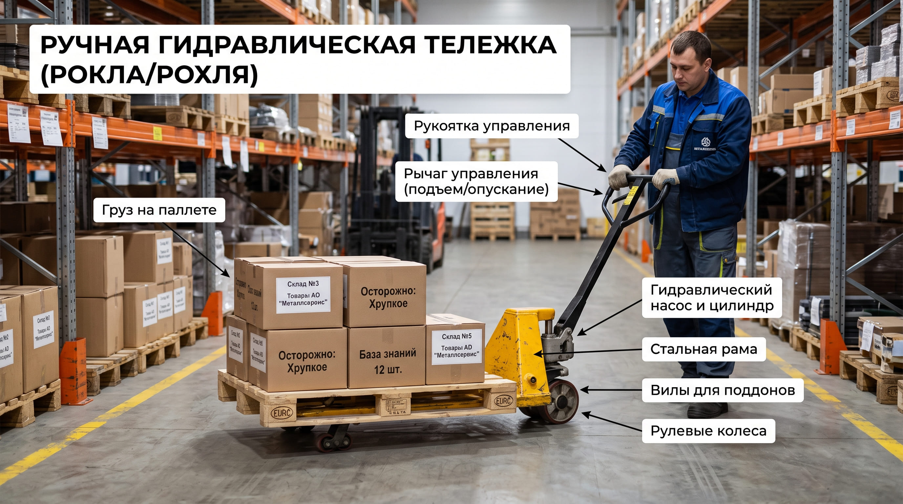
- Погрузчики: Бывают электропогрузчики (на аккумуляторных батареях) и
автопогрузчики (дизельные, бензиновые, газовые). Типы захватов: вилы, крюковая подвеска стрелы,
ковш, захват-кантователь.
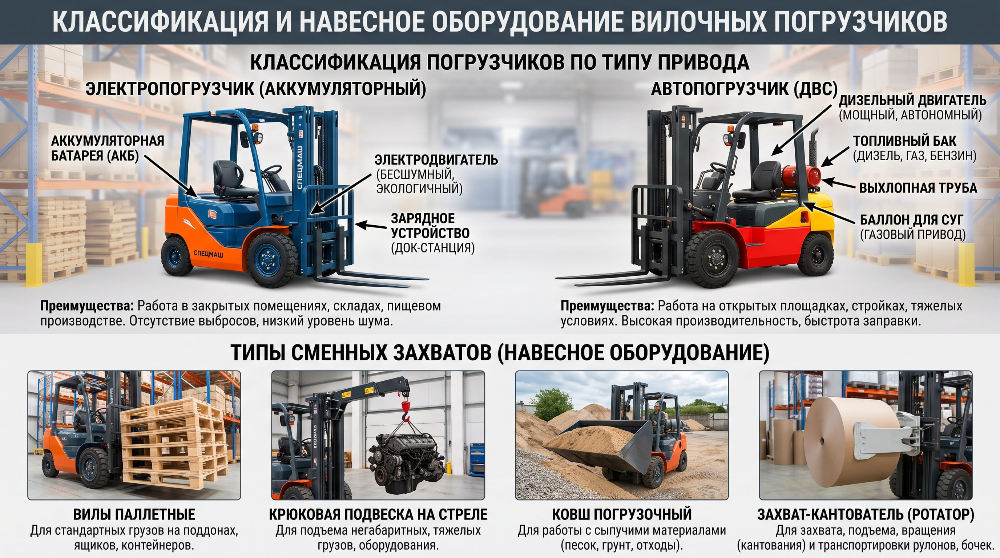
- Краны: Разделяются на самоходные, прицепные, приставные, универсальные.
Наиболее часто встречаются козловые и портальные (на припортовых терминалах) краны.
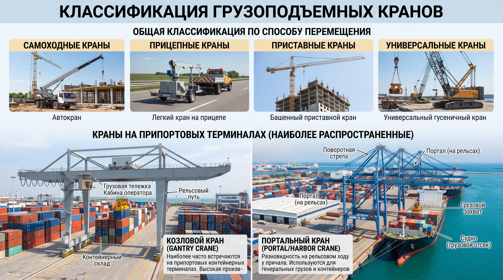
Внимание: При погрузке механизмом водитель обязан контролировать распределение веса
груза по осям во избежание штрафов ПДД.
Виды тары, упаковки и особенности перевозок
Поддоны и транспортные пакеты
| Вид поддона |
Размеры |
Максимальная
грузоподъемность |
| Европоддон (EUR) |
800х1200х145 мм |
2000 кг |
| Финский европоддон (FIN)
|
1200х1000х145 мм |
2500 кг |
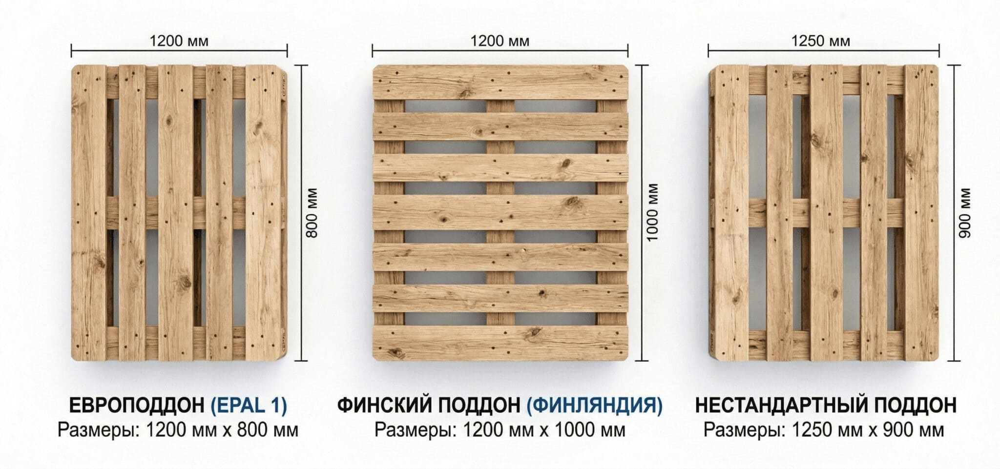
Важно понимать: Скомплектованный груз на поддоне называется «паллет». Груз
укрепляется термоусадочной пленкой, картоном или лентами.
Мягкие контейнеры и мешки
- Биг-бэг (мягкий контейнер): размеры обычно 90х90 см с высотой 90-200 см, имеет
от 1 до 4 петель и грузоподъемность 1000-3000 кг. Используется для сыпучих грузов, защищает от
влаги (полипропиленовая ткань с вкладышем).
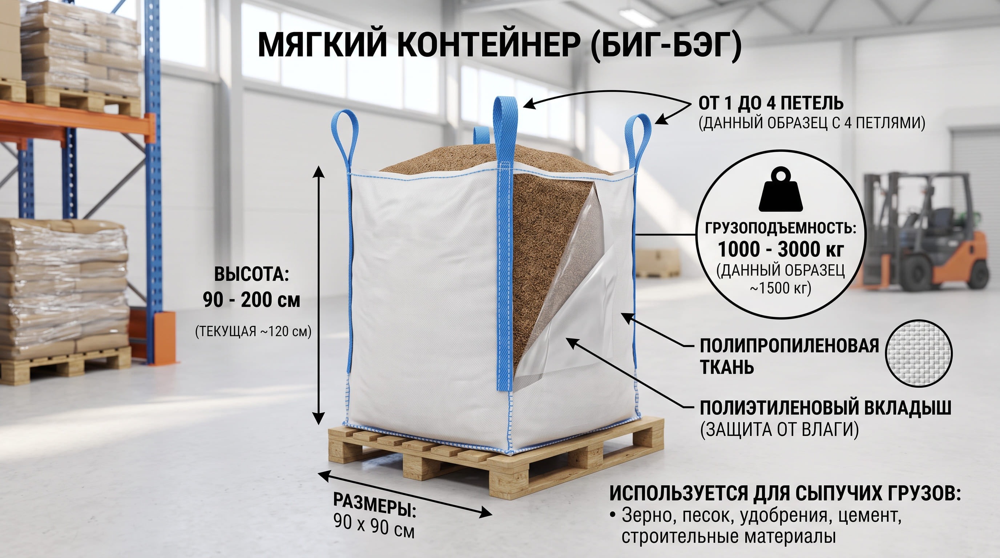
- Мешки: из грубой ткани, джута, бумаги или полипропилена, рассчитаны на вес
20-50 кг.
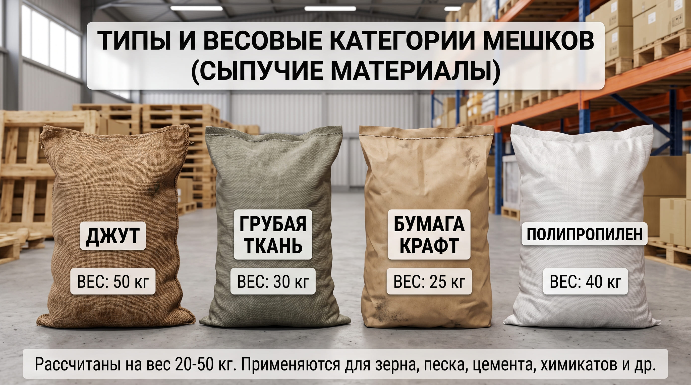
Бочки
Изготавливаются из дерева, пластмассы или металла. Стандартные объемы:
| Тип тары |
Доступные объемы |
| Стандартная бочка |
120, 150, 200 литров |
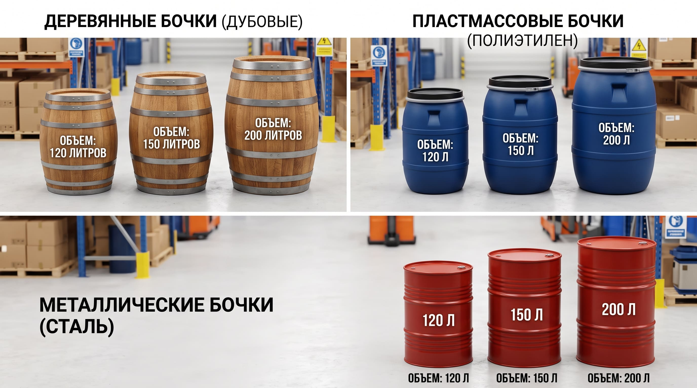
Сборные грузы: Это совместная отправка партии грузов по общему маршруту для разных
получателей, как правило, в одном транспортном средстве, что экономически выгодно заказчикам.
Современный документооборот при перевозках (ЭДО)
С 1 сентября 2026 года применение ЭТрН обязательно. Она полностью заменяет бумажные
накладные.
Основные и специфические документы
- Обязательные документы на ТС: Водительское удостоверение, СТС (свидетельство о
регистрации), путевой лист, полис ОСАГО.
- ПТС: Паспорт транспортного средства (ПТС) содержит VIN, данные о собственниках
и подтверждает право собственности на технику.
- Документ-основание: Документом-основанием для формирования рейса выступает
ЭЗЗ.
- Пищевые продукты: Для перевозки пищевых продуктов транспортное средство должно
иметь санитарный паспорт (выдается на срок до 6 месяцев, для скоропортящихся продуктов — на 3
месяца), а водитель обязан иметь личную медицинскую книжку.
Архитектура подписания ЭТрН по титулам
В ЭДО роли участников строго распределены:
- Грузоотправитель формирует Титул 1.
- Перевозчик (водитель) подписывает Титул 2 на этапе погрузки и Титул 4 на этапе выгрузки
.
- Грузополучатель принимает груз, подписывая Титул 3.
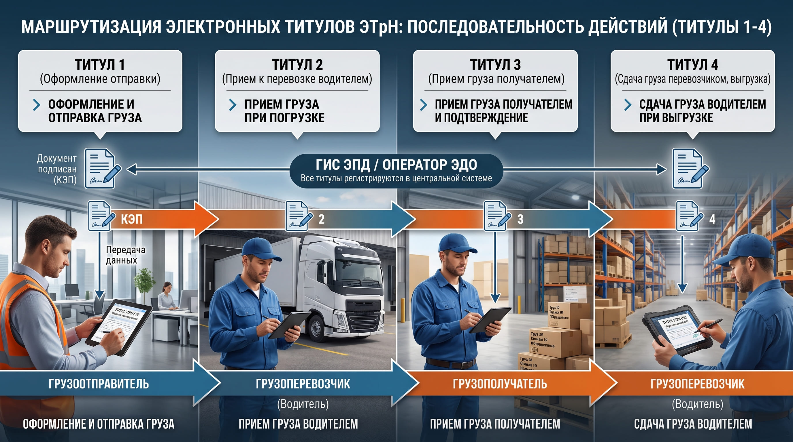
Титул 2 -> Титул 3 -> Титул 4"
class="instruction-img" onclick="openFullscreenImage(this.src)">
Критическое требование: Для легитимного подписания электронных титулов от лица
компании сотруднику (или водителю) строго необходимы УКЭП (усиленная квалифицированная электронная
подпись) и действующая МЧД (машиночитаемая доверенность).
Договор транспортной экспедиции (ТЭУ)
Если компания выступает экспедитором (привлекает сторонний транспорт), основанием для перевозки
служат Электронное поручение экспедитору (ЭПЭ) и Электронная экспедиторская расписка (ЭЭР).
ЭЭР подписывается только экспедитором и является строго односторонним документом.
Связанные материалы Базы знаний
Реформа ЭТрН
Полный разбор изменений, архитектуры титулов и переходных положений.
Открыть раздел ЭТрН
Роли в логистике
Специфика работы компании в качестве Перевозчика и Экспедитора.
Два лица логистики